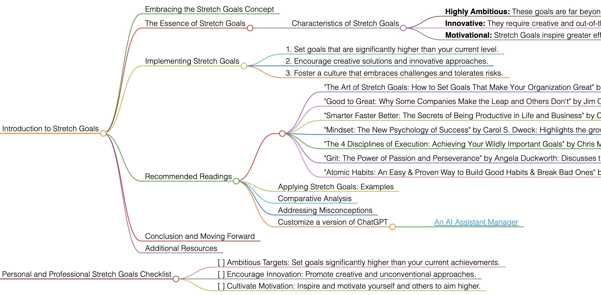

Stretch Goals
Introduction to Stretch Goals
Embracing the Stretch Goals Concept
Stretch Goals are about setting extraordinarily high objectives that go beyond current capabilities and limits. They are designed to push individuals and organizations to achieve more than what seems possible at first glance.
The Essence of Stretch Goals
Stretch Goals challenge the status quo by setting targets that require innovative thinking and extra effort. They are not just about incremental improvements but about making significant leaps in performance and achievement.
Characteristics of Stretch Goals
- Highly Ambitious: These goals are far beyond current achievements.
- Innovative: They require creative and out-of-the-box thinking.
- Motivational: Stretch Goals inspire greater effort and commitment.
Implementing Stretch Goals
To apply Stretch Goals effectively, follow these guidelines:
- Set goals that are significantly higher than your current level.
- Encourage creative solutions and innovative approaches.
- Foster a culture that embraces challenges and tolerates risks.
Recommended Readings
- "The Art of Stretch Goals: How to Set Goals That Make Your Organization Great" by Josh Kaufman: Offers insights into setting and achieving ambitious goals in organizational contexts.
- Key Takeaways: Strategies for setting effective stretch goals; balancing ambition with realism.
- "Good to Great: Why Some Companies Make the Leap and Others Don't" by Jim Collins: Discusses how companies achieve extraordinary results, often by setting stretch goals.
- Key Takeaways: Concept of the 'hedgehog principle'; importance of disciplined people and thinking.
- "Smarter Faster Better: The Secrets of Being Productive in Life and Business" by Charles Duhigg: Explores the science of productivity, relevant to achieving stretch goals.
- Key Takeaways: Importance of motivation and focus; techniques for improving productivity.
- "Mindset: The New Psychology of Success" by Carol S. Dweck: Highlights the growth mindset, crucial for pursuing and achieving stretch goals.
- Key Takeaways: The power of believing in one's ability to grow; strategies for fostering a growth mindset.
- "The 4 Disciplines of Execution: Achieving Your Wildly Important Goals" by Chris McChesney, Sean Covey, and Jim Huling: Provides a framework for achieving significant goals in business and personal life.
- Key Takeaways: Focus on the wildly important; creating a cadence of accountability.
- "Grit: The Power of Passion and Perseverance" by Angela Duckworth: Discusses the importance of grit in achieving challenging and high goals.
- Key Takeaways: Role of perseverance and passion; how grit can be cultivated.
- "Atomic Habits: An Easy & Proven Way to Build Good Habits & Break Bad Ones" by James Clear: While not directly about stretch goals, it provides insights into habit formation that can support achieving ambitious goals.
- Key Takeaways: Small changes leading to remarkable results; the compound effect of daily habits.
Applying Stretch Goals: Examples
Use Stretch Goals in various scenarios like business growth, personal development, innovative projects, or athletic achievements.
Comparative Analysis
Stretch Goals are unique for their emphasis on far-reaching ambition and the encouragement of innovative solutions.
Addressing Misconceptions
Stretch Goals are not unrealistic fantasies; they are ambitious targets that encourage reaching new heights.
Customize a version of ChatGPT
Conclusion and Moving Forward
By adopting Stretch Goals, you can push the boundaries of what you thought was possible and achieve extraordinary results. This guide has offered insights into effectively using Stretch Goals in various aspects of life and work.
Additional Resources
For further exploration of ambitious goal setting and achievement, delve into the recommended literature.
Personal and Professional Stretch Goals Checklist
